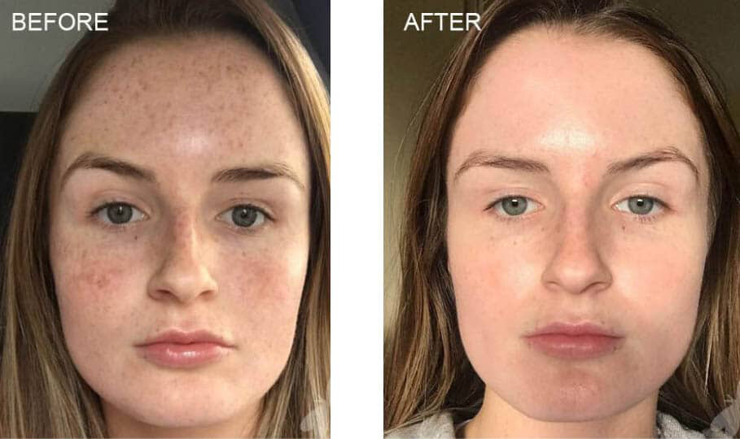

Chemical peels are cosmetic treatments that can be applied to the face, hands, and neck. They’re used to improve the appearance or feel of the skin. During this procedure, chemical solutions will be applied to the area being treated, which causes the skin to exfoliate and eventually peel off. Once this happens, the new skin underneath is often smoother, appears less wrinkled, and may have less damage.
There are a number of reasons people may get chemical peels. They may be trying to treat a variety of things, including:
There are three different types of chemical peels that you can get. These include:
Superficial peels, which use mild acids like alpha-hydroxy acid to gently exfoliate. It only penetrates the outermost layer of skin.
Medium peels, which use trichloroacetic or glycolic acid to reach the middle and outer layer of skills. This makes it more effective for removing damaged skin cells.
Deep peels, which fully penetrate the middle layer of the skin to remove damaged skin cells; these peels often use phenol or tricholoracetic acid.
